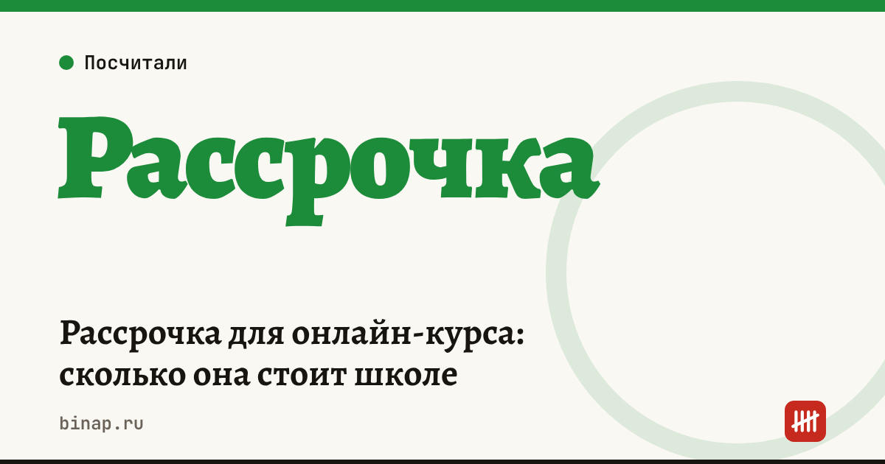

Рассрочка для онлайн-курса: сколько она стоит школе

Рассрочка «без переплаты» бесплатна для ученика, но не для школы: сервис рассрочки или банк берёт со школы комиссию с суммы покупки. Она окупается, если благодаря рассрочке покупает заметно больше людей. Посчитайте это на своих цифрах: какая доля оплат идёт в рассрочку, сколько вы платите за неё и насколько выросла конверсия.
Коротко
- Для ученика рассрочка бесплатна, а школа платит сервису комиссию с суммы покупки — размер смотрите в договоре.
- Чем длиннее рассрочка, тем обычно выше комиссия для школы.
- Средняя комиссия = сумма комиссий по всем оплатам ÷ выручка.
- Рассрочка окупается, если дополнительные продажи дают больше маржинального дохода, чем стоят комиссии.
- Возвраты по рассрочке оформляются через сервис — проверьте условия заранее.
Сроки, изменения и разборы для ИП и самозанятых — каждое утро в Telegram и MAX. Подпишитесь, чтобы не пропустить.
Формула
Средняя комиссия = доля оплат картой × ставка эквайринга + доля оплат в рассрочку × ставка рассрочки.
Рассрочка окупается, если: дополнительные ученики × чек × (1 − средняя комиссия) > комиссии за рассрочку по всем, кто купил бы и без неё.
Пример
Расчёт редакции, ставки условные — подставьте свои из договоров. Курс за 40 000 ₽, 100 учеников без рассрочки.
| Без рассрочки | С рассрочкой | |
|---|---|---|
| Учеников | 100 | 115 |
| Оплата картой (2,5%) | 100 | 60 |
| Оплата в рассрочку (10%) | 0 | 55 |
| Выручка | 4 000 000 ₽ | 4 600 000 ₽ |
| Комиссии | 100 000 ₽ | 60 000 + 220 000 = 280 000 ₽ |
| Выручка после комиссий | 3 900 000 ₽ | 4 320 000 ₽ |
В этом примере рассрочка окупилась: +15 учеников дали больше, чем стоили комиссии. Но если бы рассрочка добавила только 3 ученика (а 60 человек по-прежнему платили картой), выручка после комиссий была бы меньше, чем без неё: 3 888 000 ₽ против 3 900 000 ₽. Сколько стоит ученик с учётом комиссий и возвратов — в калькуляторе стоимости ученика.
Платформа для курсов с приёмом оплаты и рассрочкой: ссылка
Что проверить в договоре с сервисом рассрочки
- [ ] Комиссия для школы по каждому сроку рассрочки.
- [ ] Когда деньги приходят школе — сразу или частями.
- [ ] Как оформляется возврат и кто возвращает деньги ученику.
- [ ] Кто формирует чек и на какую сумму.
- [ ] Есть ли минимальный оборот или абонплата.
Что сделать
- Посчитайте среднюю комиссию по последнему потоку.
- Сравните конверсию в оплату с рассрочкой и без неё, если есть данные.
- Если рассрочка не окупается — оставьте её только для дорогих тарифов или сократите срок.
Курсы и консультации как самозанятый — где граница. Как считать стоимость клиента и окупаемость рекламы — CAC, LTV и ROMI. Все шаги — в разделе «Онлайн-школам и экспертам».
Частые вопросы
Кто платит за рассрочку «без переплаты»? Школа: сервис удерживает комиссию из суммы покупки.
Что если ученик вернёт курс? Возврат оформляется через сервис рассрочки по его правилам. Проверьте, возвращается ли школе комиссия при отмене.
Можно ли переложить комиссию на ученика? Можно поднять цену для оплаты в рассрочку, но тогда это уже не рассрочка «без переплаты» — и это нужно честно указать в предложении.